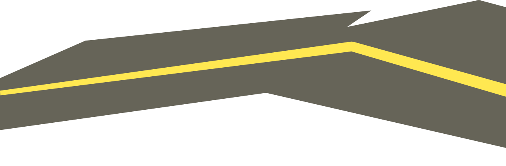
typeface
Trig
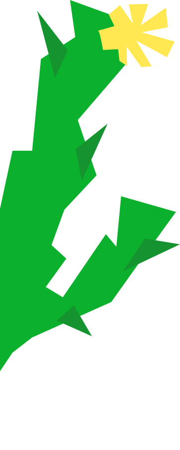
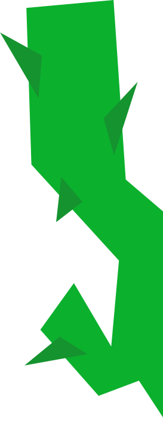
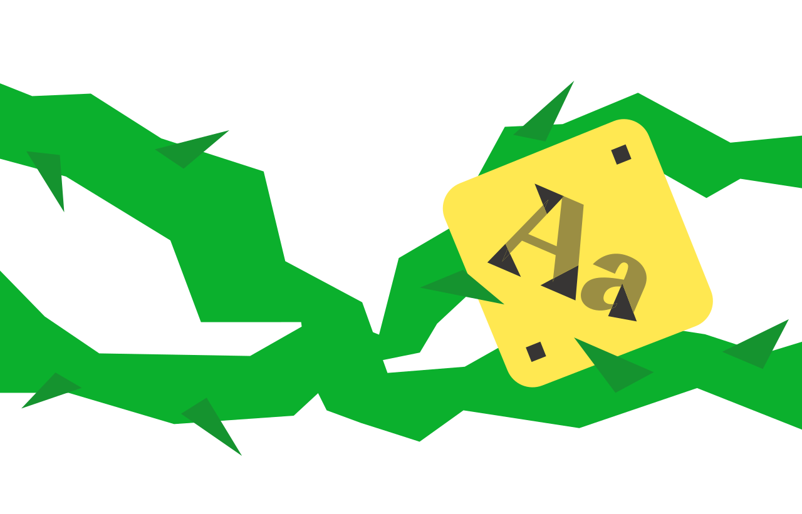
история
Trigonon появился в 2024 году в московской студии Bolditalic, которая известна работой с кириллицей.
Шрифт нарисовал Виталий Шадрин при арт-дирекции Дмитрия Голуба. В том же году гарнитуру показали на фестивале «Среда» в номинации «Тиражный шрифт».
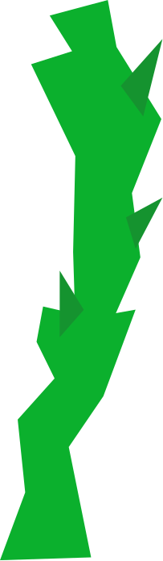
начертания
Regular
Medium
Semibold
Bold
Extrabold
Black
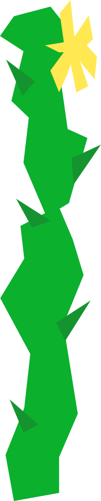
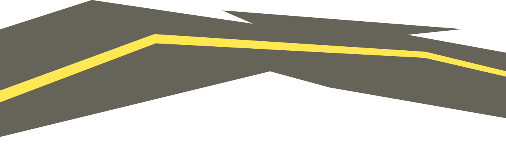
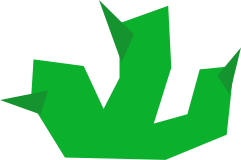
Клюв смотрит внутрь, терминал срезан
строго по горизонтали. Нога упирается
в диагональную засечку и стоит
как вкопанная.
анатомия
Терминал-капля держит ритм строки.
Штрихи тонкие и толстые, но без волосных
линий: контраст сдержанный.
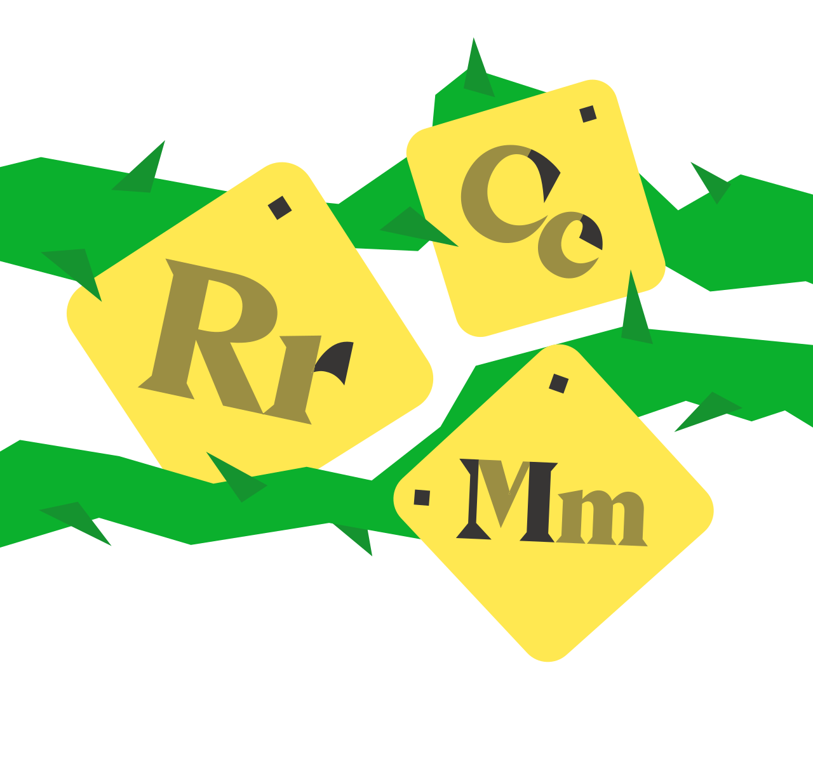
Поддерживает
более 100
языков
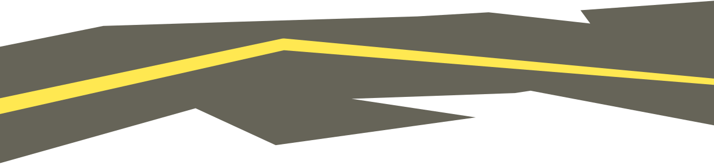
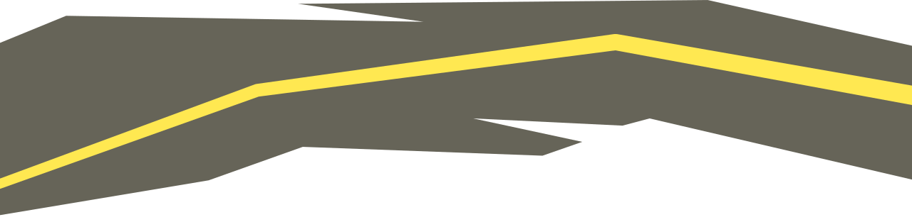
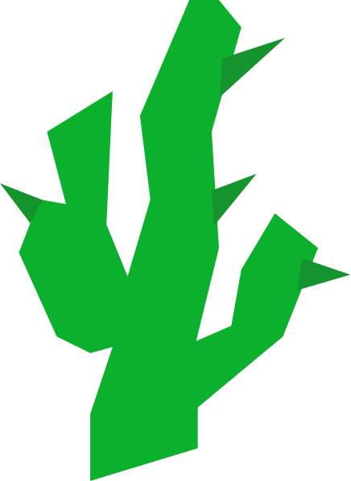
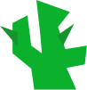
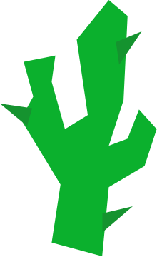
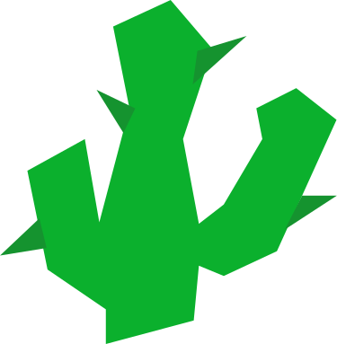
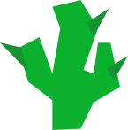
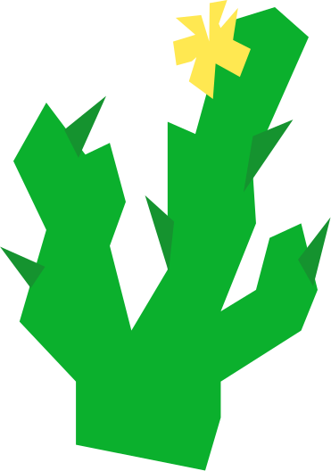
глифы и лигатуры
AaBbCcDdEeFfGg
HhIiKkLlMmNn
OoPpQqRrSsTt
UuVvWwXxYyZz
0123456789
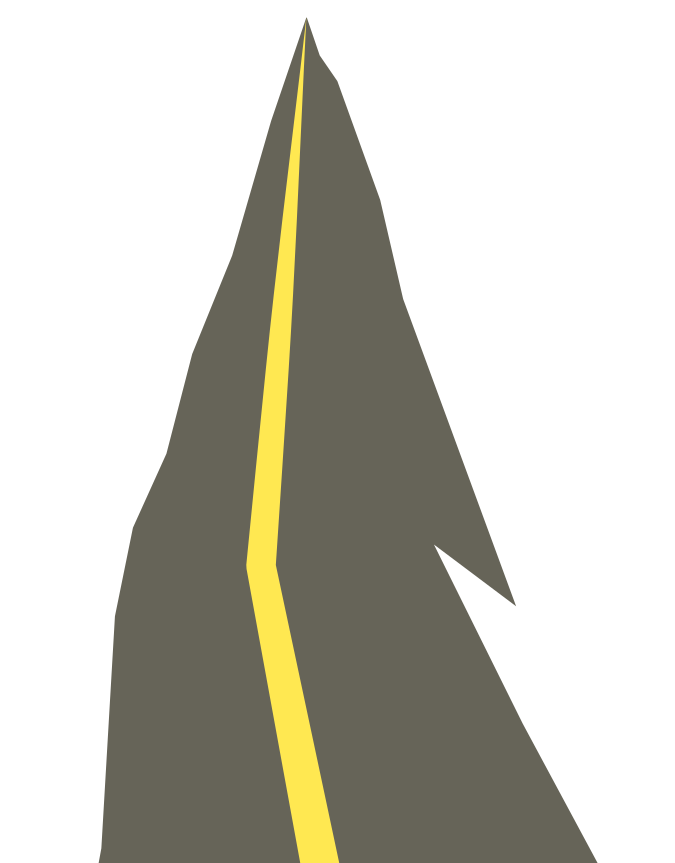
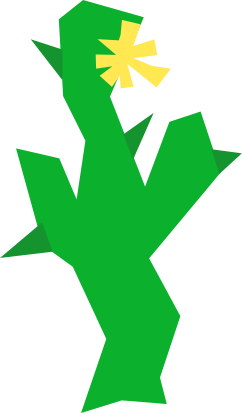
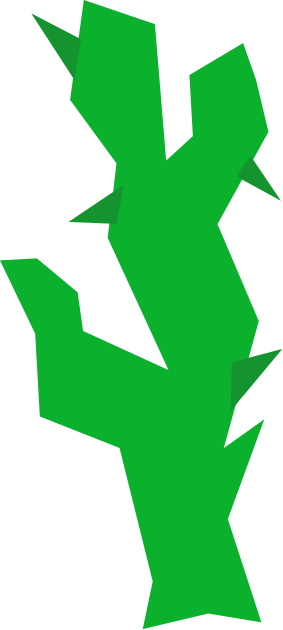
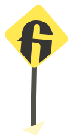
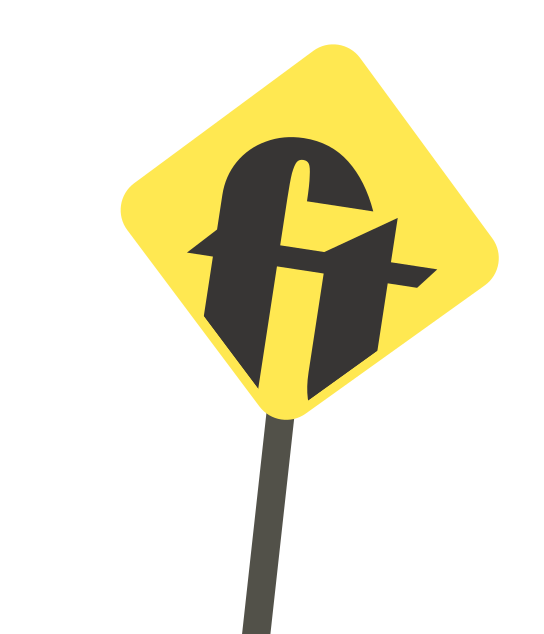
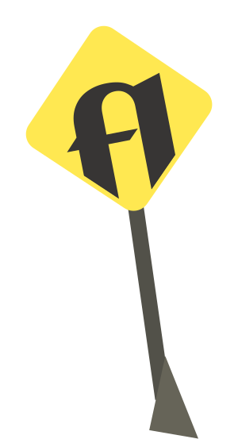
Савелий Варламов, БДЗ3266
Куратор: Сергей Гриднев